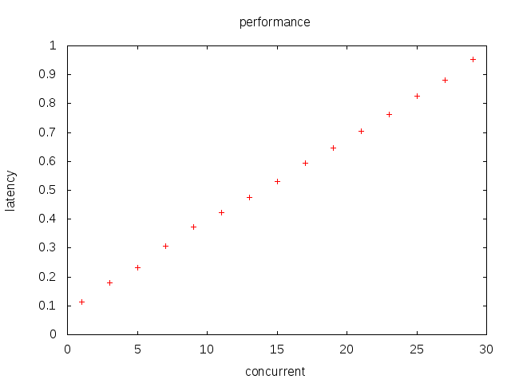

附注一下，该CPU有2核心，无HT，1ns3个时钟周期。
测试代码如下：
time -f "%e,%S,%c,%r,%s,%K,%P" ./perf_fork
数据的意义分别为: 总时间，内核CPU时间，context switch次数，读/写次数，内存耗用，CPU使用百分比。
数据处理方法如下：
import numpy as np
p = lambda s: [float(line.strip().split(',')[0]) for line in s.splitlines()]
q = lambda s: [float(line.strip().split(',')[1]) for line in s.splitlines()]
np.array(p(s)).mean()
np.array(p(s)).var()
np.array(q(s)).mean()
np.array(q(s)).var()
使用s_call来测试性能，循环1G次。
2.35,0.00,17,0,0,0,99%
2.34,0.00,13,0,0,0,99%
2.34,0.00,10,0,0,0,100%
2.35,0.00,10,0,0,0,99%
2.34,0.00,14,0,0,0,99%
2.34,0.00,6,0,0,0,99%
统计结果如下：
每次call的开销为2.34ns，约7个指令周期。当然，这些并没有考虑调用压栈和数据返回。
使用s_syscall来测试性能，循环1G次。这里特意选用了一个不可能失败的内核函数，getpid，来衡量每次进入getpid的开销。
4.37,0.00,76,0,0,0,99%
4.34,0.00,43,0,0,0,99%
4.37,0.00,124,0,0,0,99%
4.37,0.00,63,0,0,0,99%
4.36,0.00,48,0,0,0,99%
4.36,0.00,47,0,0,0,99%
统计结果如下：
这里可以看到，纯粹的内核进入开销小到非常惊人，只有4.36ns，约合13个指令周期，而且这里还要进行数据的查询和返回。所以内核调用开销在下面的测试中全部忽略不计。
使用s_fork程序(注释语句关闭模式)，循环1M次，重复6次，原始数据如下：
49.04,26.83,29784,0,0,0,55%
51.53,26.38,32057,0,0,0,52%
49.88,26.02,30892,0,0,0,53%
51.39,27.13,37573,0,0,0,54%
52.89,28.12,37924,0,0,0,54%
51.19,27.02,35880,0,0,0,54%
统计结果如下：
从数据上，我们可以简单得到结论。在测试设备上，每次fork的开销为51us，内核开销为27us，精确级别在1-2us左右。粗略换算一下，一次fork大约消耗了150k个时钟周期。
注意，这个数据并不代表fork本身的速度。因为除去fork之外，我们还有子进程退出的开销，父进程wait的开销。甚至严格来说，还包括了至少一次的context switch(有趣的是，这个取决于fork后是优先执行子进程还是父进程)。
但是作为进程模式的服务程序，这些开销都是预料中必须付出的。不过我们并没有模拟signal对性能的影响(简单测试表明，性能也会显著的变差)。
另外cs次数比产生的进程数远小，可能被第二颗核心执行掉了部分。看来要做精确的测试需要使用单核处理器。
在s_fork中，注意那句注释。当优先执行子进程时，会发生什么现象？
预期来说，应当不发生变化，或者轻微的变慢。因为我们预期系统优先执行子进程(以减少exec前的page cow)。如果发生变化，那么说明这个假定是不正确的。真实情况是优先执行父进程或者无保证。
如果发生变化，首先是一次context switch会变为两次。因为如果在产生了大量子进程后再依次cs，那么需要N+1次cs来结束所有子进程并返回父进程，平均每个子进程一次cs(N足够大的情况下基本近似，例如在标准配置下30000以上)。而如果每次产生子进程就切换，那么会变为每个子进程两次cs。
其次，先执行父进程导致在每次调度时的活跃进程数更高，因此调度器的每次执行开销更高。按照算法量级估计，大约是4倍以上。但是实际复杂度的估量比平均值更加麻烦——因为活跃数总是在不停的变化中。大约是Sum(logn)/n=log(n!)/n。因此，虽然在cs次数上减少，但是每次cs的开销会增加。
最后，先执行子进程会导致上下文描述符表项被频繁的重用，从而提高命中率。当然，在我们的测试程序中做不到这点，因为每次都是开满才开始回收的。因为直接回收会导致父进程等待子进程结束，从而导致缓慢。所以至少应当需要执行相当的数量才进行回收。
而我们摒弃了使用信号响应的方式进行回收，因为信号的速度比fork更慢，这会导致测试不准。
下面是实际原始数据：
45.19,22.42,399890,0,0,0,51%
47.66,22.46,414808,0,0,0,48%
45.51,23.12,376053,0,0,0,52%
46.35,22.10,401536,0,0,0,49%
48.28,22.82,415162,0,0,0,48%
47.44,22.34,413285,0,0,0,48%
统计结果如下：
解读上可以发现，每10次fork产生四次cs(这可能是因为第二颗核心执行了部分的子进程)，但是每次fork的开销降低为47us，内核CPU降为23us(用户态时间几乎不发生变化)，精确级别在1us左右。
这说明真实情况确实是先执行父进程或无保证。
使用t_thread程序，循环1M次，重复6次，原始数据如下：
9.57,8.22,21098,0,0,0,104%
9.77,8.40,29704,0,0,0,104%
9.36,8.17,10390,0,0,0,106%
9.56,8.50,14514,0,0,0,107%
9.35,8.34,7244,0,0,0,108%
9.57,8.43,26351,0,0,0,106%
统计结果如下：
解读数据可以看到，thread模式的开销为9530ns(已经降到纳秒级了)，CPU将为8340ns，精确级别在20ns级别。粗略换算一下每次create的开销大约是30k个时钟周期。简单对比可以看出，thread模式比fork模式大约快了5倍。
使用t_yield.c程序研究线程切换开销。具体过程单独整理了一个文件，下面只贴出结论：
基本可以看到，随着上下文数的增加，每次调度开销是随之增加的。而且两者近似的呈一条直线(虽然看起来比较扭曲)。这证明调度复杂度为O(logm)的推论基本是正确的。
另外，在1-2线程时性能特别优秀。这可能是线程数小于核数，导致大部分情况下根本未执行调度。对此作出的一点推论是。很多时候，我们为了充分利用CPU会作出worker = N+1的设定。如果IO并不是特别密集，可能性能反而比worker = N更差。
使用t_sleep.c程序来测试usleep(0)的性能。100线程，1M次循环。下面是结论：
66.55,90.62,4160,0,0,0,149%
65.60,87.08,3238,0,0,0,145%
65.28,83.95,2570,0,0,0,139%
65.59,85.98,2366,0,0,0,143%
65.67,86.79,1715,0,0,0,143%
65.84,87.70,1896,0,0,0,145%
统计结果如下：
计算结果来说，1315ns。比同样的单纯调度，开销增加了916.8ns。但是在此期间请特别留意CPU利用率曲线。该曲线呈现出明显的先达峰后下降趋势。说明某些线程的sleep比另一些线程的优先得到调度，导致最后CPU利用率不足。从循环次数和下降趋势来说，很难说调度是“近似公平”的。
另外特别注意，我们针对1线程1M次循环得到的结论。
53.81,2.52,20,0,0,0,4%
53.88,2.47,22,0,0,0,4%
53.79,2.48,16,0,0,0,4%
55.09,2.35,49,0,0,0,4%
56.19,2.27,50,0,0,0,4%
55.71,2.43,62,0,0,0,4%
统计结果如下：
这个结果表明，usleep后会导致很长(50us以上)的延迟，在这个时间段内不会有CPU消耗，哪怕usleep(0)。这是由于任务被标记为TASK_INTERRUPTIBLE，然后挂到timer队列上。timer队列调度是有频率限制的，低于这个时间片的sleep不会得到及时响应。这导致usleep测试CPU和调度性能实际上是个很没意义的行为。
使用t_lock.c来研究pthread mutex的性能。

可以看到，mutex几乎不随着并发数的上升而上升。难道是我们的推论有误？
我详细的看了下源码。在glibc中，使用的是futex而非mutex实现的锁。前者会把系统置于TASK_UNINTERRUPTIBLE而后者会置于TASK_INTERRUPTIBLE。在ps中一望便知。而TASK_INTERRUPTIBLE是未就绪状态，并不在调度范围内。因此，仅仅在某个上下文执行了unlock后，未进入lock时的短暂时间内，系统有两个可调度上下文。在进入lock后，系统又变为一个可调度上下文。因此，系统在大多数时候都在1-2个可调度上下文间浮动。
而且请注意，这里还是换出-换入两次(所有锁类代码都是这样)。
而read/write中，活跃上下文数是受客户影响的。当某个fd收到用户数据的时候，对应上下文就会从TASK_INTERRUPTIBLE转变为就绪，而且在下一个阻塞(或处理完成)前始终占据调度队列。
python下的测试就不用time了，我们改用python的timeit，循环100M次。具体可以看py_yield.py。数据结果如下：
7.64262938499 9.2919304393e-06
5.41777145863 4.94284924931e-06
从结果来看，100M次循环的平均时间是5.4s，平均每次大约54ns。使用yield后变为76ns，增加了22ns。
这次代码在py_greenlet.py，循环10M次。数据结果如下：
5.35270996888 7.44085846125e-05
5.31448976199 5.82336765673e-05
单次循环时间消耗为535ns。比最初的54ns，增加了481ns。基本来说，时间增长了10倍率。
这是预料中的，因为greenlet早就声明自己通过堆栈拷贝来实现上下文切换。这会消耗大量CPU时间。从原理上说，栈越深，消耗越大。但是测试结果表明两者几乎没有差异，栈深反而性能更加优异。
这次代码在pyyieldfrom.py，循环100M次。数据结果如下：
11.3753386545 2.05564687993e-05
8.83233247434 7.92599097725e-05
6.31597025133 0.00346735863271
单次循环时间消耗为113.7ns。比最初的63.2ns，增加了50.5ns。单纯的yield为88.3ns，增加了25.1ns。
yield from需要在python3下执行，从数据上看，python3下执行循环加的过程比python2下更缓慢，而且yield也同样比python2下的缓慢(这也是python3经常被诟病的一个问题，经常比python2慢)。
但是针对2/3速度对比问题，我特别声明一下。这个测试没有针对2/3速度对比做定制，也没有经过精细分析。所以不能保证其他人在其他环境下执行出相反的结果。总之，目前我可以做出的简单结论是。python3和python2速度相仿，python2略快。
而yield from比yield更慢，这完全可以理解。在python2中，yield from需要用for来表达，这样的结果一个是难看，一个也未必快过yield from。
下面我们想要知道一下，随着yield的深度增加，速度是否减慢。用同一个程序里的test_all代码进行了简单的测试后，结果如下：
yieldfrom.png" title="" />
结论是，随着递归深度的增加，yield from的上下文切换速度是会减慢的。两者呈明显的线性关系。
下面是一组golang有关的测试，首先使用g_goroutine.go来测试goroutine创建和销毁开销，执行10M次：
5.70,0.11,598,0,0,0,99%
5.70,0.12,77,0,0,0,99%
5.66,0.14,334,0,0,0,99%
5.66,0.10,271,0,0,0,99%
5.57,0.16,47,0,0,0,99%
5.77,0.10,521,0,0,0,99%
统计结果如下：
大致结果为创建开销568ns，大约是线程创建开销的1/20。注意代码没有保证goroutine执行完毕，所以可能会有一定误差。
我们使用g_sched.go来研究golang的调度。

可以看到，在很大范围内，延迟虽然随着并发升高而升高，但是升高的幅度并不大。即使是16K这个级别的并发，也只有250ns左右的延迟而已。
我们使用g_chan.go来研究chan上的调度。

可以看到，chan的性能更加优秀，而且不随着并发的增长而增长，在所有的范围内基本都是60-70ns。这主要是因为chan并不需要“调度”，而只需要上下文切换。所以这个切换是非公平的。chan唤醒上下文的顺序并不一定按照在chan上阻塞的顺序。
我们使用g_lock.go来研究chan上的调度。

让我颇为困惑的是，lock的性能居然比chan更优秀。在初始阶段都是30ns多点，在256并发上下遇到了剧烈的波动，以上就减少到了20ns。原理上说，lock同样也是不做出顺序假定，无调度的。但是这并不能说明为什么chan比lock性能更差。也许是chan内部做了一些额外工作。而且这些工作应当和并发无关，也就是局部(local)工作。
使用s_jmp程序来测试setjmp的性能。1G次循环。下面是结论：
5.77,0.00,29,0,0,0,99%
5.70,0.00,30,0,0,0,99%
5.71,0.00,22,0,0,0,99%
5.71,0.00,23,0,0,0,99%
5.70,0.00,30,0,0,0,100%
5.70,0.00,23,0,0,0,99%
统计结果如下：
单次调度开销只有5.7ns，在所有测试中性能最优。(glibc-2.19/sysdeps/x86_64/setjmp.S)
使用s_context程序来测试ucontext的性能。100M次循环。下面是结论：
33.42,13.08,163,0,0,0,99%
33.43,13.40,147,0,0,0,99%
33.39,13.24,143,0,0,0,99%
33.41,13.25,156,0,0,0,99%
33.70,13.41,328,0,0,0,99%
33.42,13.18,290,0,0,0,99%
统计结果如下：
单次调度开销高达167.3ns，仅比系统的sched在高线程下略快。这事很奇怪，因为根据我看到的源码(glibc-2.19/sysdeps/unix/sysv/linux/x86_64/setcontext.S)，getcontext/setcontext在glibc中是用汇编实现的。其中陷入内核只是为了设定signal mask。